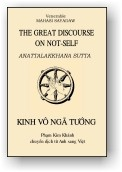
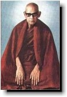

|
BuddhaSasana Home Page |
Vietnamese, with Unicode CN-Times font |
|  |
Kinh
Vô Ngã Tướng Thiền sư Mahasi Sayadaw Phạm Kim Khánh dịch |
 |
-ooOoo- Lời tựa Ðối với người hành thiền Phật Giáo, danh tiếng của Ngài Mahasi Sayadaw không cần phải được giới thiệu. Những lời dạy về phương pháp hành thiền của Ngài đã được lãnh nhận và hấp thụ cùng khắp thế giới. Hôm nay Hội Buddhadhamma Foundation xin được vinh dự giới thiệu quyển "Kinh Vô Ngã Tướng", như quyển sách đầu tiên trong loạt sách về giáo huấn của vị thiền sư nổi tiếng nầy. Bản dịch sơ khởi (từ Miến sang Anh) của U Ko Lay, đã được Hội Buddha Sasana Nuggaha Foundation tại Rangoon, Myanmar, sửa chửa và ấn hành. Trong bản nầy vài đoạn lặp đi lặp lại đã được loại bỏ và có thêm những danh từ Pāli được chuyển dịch sang tiếng Anh. Tuy nhiên giáo huấn nguyên thủy vẫn được giữ với đầy đủ chi tiết và vẫn còn những đoạn lặp lại: bài giảng nầy cốt dành cho những thiền sinh đang dự một khóa thiền tích cực. Chúng tôi hy vọng rằng những ấn bản nầy sẽ giúp đọc giả thích thú quan tâm đến pháp hành thiền và những lời dạy của Phật Giáo. Buddhadhamma Foundation -ooOoo- Lời nói đầu Bên trong cá nhân của mỗi người thế gian (puthujjana, người phàm tục, tại thế) những ô nhiễm (kilesa) như tham lam và luyến ái mau chóng sanh sôi nảy nở. Những ô nhiễm ấy dính liền theo đối tượng khởi phát ở lục căn, như hình sắc đẹp đẽ chẳng hạn. Khi luyến ái khởi sanh theo tất cả những gì vừa lòng và ưa thích thì trạng thái dính mắc vào một attā (tự ngã, khái niệm về một "thực thể sống") chẳng những là căn bản, mà cũng là phần nòng cốt sâu ẩn tiềm tàng rất khó loại trừ. Do nhờ tinh tấn chuyên cần và trí tuệ, chư Phật Ðộc Giác (Pacccekabuddhas, Bích Chi Phật) tự mình có khả năng tận diệt trạng thái dính mắc vào khái niệm một tự ngã bên trong mình mà không cần có sự trợ giúp. Nhưng các Ngài không có khả năng giúp ai khác diệt trừ dính mắc nầy của họ. Chỉ những vị có đủ khả năng đặc biệt sáng suốt chỉ rõ, minh xác cho người khác hiểu biết chân lý và công hiệu của Tứ Diệu Ðế mới có thể quét sạch tà kiến dính mắc nầy trong tâm người khác. Chư vị Phật Ðộc Giác (Pacceka-buddhas) không thể làm, vì lý do ấy các Ngài chỉ trở thành Ðộc Giác Phật. Vị Ðộc Giác Phật nhập Niết Bàn đơn độc một mình. Ngài không phải là bậc Chánh Ðẳng Chánh Giác và không thể truyền dạy Giáo Pháp cho người khác. Chư vị Chánh Ðẳng Chánh Giác, bậc Toàn Giác, có những khả năng tinh thần quang minh sâu sắc hơn các vị Ðộc Giác Phật, Paccekabuddhas. Vị Phật Chánh Ðẳng Chánh Giác cũng chứng ngộ Tứ Diệu Ðế như chư vị Phật Ðộc Giác, mà hơn nữa, còn có thể dạy dỗ, giúp người khác thấu triệt tận tường bốn chân lý thâm diệu nầy. Vì thế ấy Ngài là Chánh Ðẳng Chánh Giác, Sammā Sambuddha. Ðức Thế Tôn thuyết giảng thời Pháp Ðầu Tiên đề cập đến Tứ Diệu Ðế, cho năm vị đạo sĩ. Thời Pháp ấy được gọi là Dhammacakkappavattana Sutta, Kinh Chuyển Pháp Luân, vận chuyển Bánh Xe Của Giáo Pháp. Ðây là Giáo Pháp đầu tiên mà Ðức Phật ban truyền. Ngài giảng bài kinh nầy vào buổi chiều thứ Bảy, đêm trăng tròn tháng Bảy DL. đúng hai tháng sau khi Thành Ðạo. Khi Ðức Phật chấm dứt thời Pháp Ðầu Tiên, vị đạo sĩ trưởng đoàn, Koṇḍañña, Kiều Trần Như, đắc Quả Tu Ðà Huờn (Sotāpanna, Nhập Lưu). Chứng đắc Ðạo Quả nầy vị Thánh Tu Ðà Huờn đã loại trừ mọi hoài nghi về Giáo Pháp và mọi khái niệm sai lầm về sakkāya, cơ thể vật chất, xem thân nầy là "tự ngã" hay một thực thể sống. Dầu sao Ngài vẫn còn māna, ngã mạn [*]. Bốn vị kia chưa chứng ngộ Giáo Pháp đặc biệt, śự thức tỉnh đến siêu trí, hay mức độ tâm cao siêu".
Vì tính ngã mạn, hay chấp vào tự ngã, đã ăn sâu vào luồng nghiệp của Koṇḍañña, và vì Vappa cũng như ba vị kia trong nhóm năm anh em đạo sĩ chưa thành đạt "Pháp Nhãn thanh tịnh và vô nhiễm", nên Ðức Phật tiếp tục khuyến dạy và khích lệ các Ngài nên duy trì chánh niệm và quán chiếu đúng theo pháp hành thiền Minh Sát (vipassanā). Sau khi tích cực hành thiền, tất cả năm vị đều thành tựu tầng Thánh Tu Ðà Huờn, do đó loại trừ mọi dính mắc chấp rằng thân nầy là chính mình, tự ngã (sakkāyadiṭṭhi, thân kiến). Ngài Vappa chứng đắc tuệ Minh Sát vào ngày đầu tiên sau đêm trăng tròn, Ngài Bhaddhiya vào ngày thứ nhì, Ngài Mahānāma ngày thứ ba, và Ngài Assaji vào ngày thứ tư. Chừng đó Ðức Thế Tôn tập hợp toàn thể Nhóm Năm Vị lại và thuyết giảng bài Pháp thứ nhì, trình bày học thuyết anattā (vô ngã). Lúc bấy giờ là ngày thứ Năm, năm ngày sau đêm trăng tròn tháng Bảy DL. Khi nghe xong bài Anattalakkhaṇa Sutta (Kinh Vô Ngã Tướng) tất cả năm vị đều chứng đắc Ðạo Quả A La Hán, do đó tất cả năm vị hoàn toàn tận diệt mọi hình thức ái dục, bao gồm tính ngã mạn, māna. Như danh từ Anattalakkhaṇa Sutta hàm xúc ý nghĩa (anattā = vô ngã, lakkhaṇa = đặc tướng) bài kinh nầy rõ ràng trình bày lý "vô ngã", đối nghịch với tà kiến chấp thủ "tự ngã". Anattalakkhaṇa Sutta không phải là một bài kinh dài. Trong bổn nguyên thủy do cuộc Kết Hợp Phật Giáo Thế Giới Kỳ Sáu phát hành, bài kinh nầy chỉ vỏn vẹn chiếm một trang giấy. Bài kinh không có đề cập đến phương pháp hành thiền hoặc kỷ thuật quán chiếu. Giáo huấn nầy chú trọng đến chân lý thiên nhiên nhiều hơn là những phương pháp thực hành. Do đó đối với người không quen thuộc với pháp hành thiền Minh Sát (vipassanā meditation) ắt khó thông hiểu thực tướng vô ngã được mô tả trong bài kinh. Sở dĩ năm vị đạo sĩ nhanh chóng lãnh hội giáo lý có thể là vì thời Pháp do chính Ðức Bổn Sư thuyết giảng và cũng vì thính giả may mắn là bậc đã có kiến thức sâu sắc bén nhạy. Cả năm vị chẳng những đã được thuần thục chứng nghiệm từ khi nghe thời Kinh Chuyển Pháp Luân (Dhammacakka Sutta), mà còn đã vượt đến giai đoạn Nhập Lưu. Nhờ vậy các Ngài nhanh chóng thành tựu Ðạo Quả A La Hán. Vào thời Ðức Phật còn tại thế có những vị kiến thức bén nhạy và ba-la-mật (pāramitā) tròn đầy như nhóm năm vị đạo sĩ, vừa khi được nghe Ðức Bổn Sư thuyết giảng thì nhanh chóng thành tựu Ðạo Quả (magga-phala). Dĩ nhiên, đó là nhờ nghe chính Ðức Bổn Sư thuyết giảng, nhưng các vị ấy cũng phải dành rất nhiều công phu để tích cực chuyên cần trau giồi thiền Minh Sát (vipassanā). Giáo Pháp Ðặc Biệt chỉ được thành tựu vì những vị ấy đã thành tâm cố gắng tích cực hành thiền, đã nhập định vững chắc, thâm sâu và quán chiếu bén nhạy, và chỉ một ít người có đủ trí tuệ hay đủ ba-la-mật để được như vậy. Nhiều người không thể quán chiếu và ghi nhận nhanh chóng dường thế ấy. Mặc dầu vậy cũng có những người lười biếng sẽ làm ra vẻ thông thạo nói: Nếu nhờ đọc sách mình hiểu biết bản chất thiên nhiên của lý vô ngã thì cần gì phải thực hành. Ta có thể thành tựu Ðạo Quả bằng cách chỉ nghe suông lời dạy." Với loại suy tư mong muốn như vậy họ tự đặt họ ngang hàng với các bậc Thánh Nhân. Những khái niệm tương tợ làm vừa lòng hạng người chỉ ăn không ngồi rồi, những người tự nhận, tự phong mình là Thánh Nhân vì chỉ giản dị được nghe Giáo Pháp. Hạng người nầy không phải ít. Loại hiểu biết lý vô ngã bằng cách lượm lặt đó đây xuyên qua những thời Pháp không phải là thật sự chứng ngộ cá nhân, mà chỉ là hiểu biết qua sách vở. Nếu Ðạo và Quả có thể được chứng ngộ bằng cách ấy, hầu hết những người Phật tử hiểu biết lý vô ngã đều có thể được xem là A La Hán. Tuy nhiên, vì người như vậy không có những phẩm hạnh (paramittā) của một vị A La Hán, hiển nhiên họ không phải thật sự là A La Hán. Quan tâm đến tình trạng sai lầm của những ý kiến tương tợ Ngài Mahasi Sayadaw nêu lên những lời dạy rõ ràng và chính xác trong bài Kinh Anattalakkhaṇa Sutta, Vô Ngã Tướng, đem những người ấy về con đường chân chánh. Bài Kinh Anattalakkhaṇa mô tả bản chất và đặc tính của lý vô ngã, nhưng không chỉ giản dị dạy phương pháp hành thiền hoặc kỷ thuật quán chiếu và ghi nhận, niệm và giác tỉnh. Trong sách nầy Ngài Sayadaw diễn tả đầy đủ phương pháp quán niệm và giải thích với đầy đủ chi tiết đường lối suy tư về lý vô ngã có thể dẫn đến mức độ thành tựu Niết Bàn. Bài kinh được trình bày đúng theo kinh điển, dựa trên kinh nghiệm cá nhân trong khi thực hành thiền Minh Sát (vipassanā), và được giải thích sau khi đã thâu thập những kinh nghiệm và những hiểu biết cá nhân trong lúc thực hành dưới sự hướng dẫn của một vị minh sư, và sau khi tham khảo những Kinh Ðiển Pāli và những Chú Giải thích ứng. Trong những thời dạy giáo lý Ngài Sayadaw từ bi giảng rộng với đầy đù chi tiết bài kinh Anattalakkhaṇa Sutta, vốn được Ðức Phật giáo truyền một cách ngắn gọn. Khi những thời Pháp ghi âm nầy được vị thẩm phán hồi hưu, U Thein Han, chép và đánh máy lại đầy đủ, bản thảo dài 420 trang. U Thein Han trình lên Ngài Sayadaw và xin phép cho ấn hành. Ngài vui lòng chấp nhận sau khi tóm lược, chỉ giữ lại những giáo lý cương yếu gồm 152 trang. Một phần cũng vì vào lúc bấy giờ giấy in sách còn khan hiếm. Lẽ dĩ nhiên Ngài Sayadaw rất khéo léo giảng rộng những điểm quá giản lược và thâu ngắn gọn những đoạn quá dài dòng. Chẳng những Ngài tóm lược những bản dài dòng bài kinh Anattalakkhaṇa Sutta, Vô Ngã Tướng và "Phương Pháp Hành Thiền Minh Sát" mà còn giảng giải rành mạch bài Dhammacakka Sutta, Kinh Chuyển Pháp Luân, giúp cho những ai muốn đọc và nghe Giáo Pháp một cách tường tận, vắn tắt mà rõ ràng, và như thế là một phước lành cho tất cả. Mỗi khi thuyết giảng hoặc viết, Ngài Sayadaw chú trọng đến ý nghĩa nhiều hơn là những nguyên tắc văn phạm. Thí dụ như Phạn ngữ "Bārāṇasiyaṁ", thường được dịch là "tại Benares", thì không có gì sai. Nhưng để sát gần với thực tại hơn, Ngài Mahasi Sayadaw viết là "trong vùng Benares" hoặc "gần Thành Benares" vì lúc bấy giờ Ðức Thế Tôn tạm ngự tại vườn nai (Lộc Uyển) gần Thành Phố Benares (thay vì trong tĩnh Benares). Mặc dầu quan tâm nhiều đến ý nghĩa của câu văn, Ngài Sayadaw không vì quá chú trọng đến ý mà bỏ quên không giữ đúng văn phạm. Nói cách khác, Ngài chú tâm đầy đủ đến phần văn phạm nhưng đặc biệt chú trọng đến ý nghĩa, không để vì muốn theo đúng văn phạm mà làm sai ý nghĩa của câu văn. Do đó bản dịch của Ngài không chính xác theo đúng phương pháp cổ truyền. Sau khi đắn đo suy xét câu văn Ngài bám sát theo ý nghĩa thật sự và diễn đạt ra thành lời, viết hay nói. Giáo huấn về ba đặc tướng vô thường, khổ, vô ngã (anicca, dukkha, anattā) nghe rất quen thuộc, và luôn luôn ở đầu môi chót lưỡi người Phật tử. Mỗi khi có một diễn biến ít nhiều quan trọng xảy ra ta liền nghe nhắc đến những danh từ nầy, gợi ý nên nhớ lại Giáo Pháp. Ðiều nầy chứng tỏ rằng giáo huấn về ba đặc tướng rất là phổ thông và được hiểu biết rộng rãi trong giới Phật tử. Lẽ dĩ nhiên đây chỉ là sự hiểu biết xuyên qua sách vở hay vì thường được nghe lặp đi lặp lại, nhưng trong thực tế đây là một giáo lý khó thấu đạt đầy đủ, mặc dầu nhìn từ bên ngoài thấy hình như dễ hiểu. Trong ba đặc tướng, lý vô ngã, "anattā", là thâm diệu và khó thông suốt nhất. Cũng vì lý do ấy mà chính Ðức Thế Tôn đã gặp sự phản đối nghiêm trọng của những nhân vật như Ðạo Sĩ Du Phương Saccaka, và Phạm Thiên Baka vì những vị nầy có quan kiến đối nghịch về "tự ngã". Trước khi có những lời dạy của Ðức Phật người ta hiểu rằng cái "ta" cố hữu chằn chịt dính liền với cơ thể vật chất (rūpa, sắc) và phần tâm linh (nāma, danh). Ðối nghịch với tà kiến nầy Ðức Phật tuyên ngôn rằng danh và sắc không phải là "ta", không phải là "tự ngã" của ta. Trong thực tế, rất khó làm cho người ta thấu triệt lý "vô ngã" vì trong vô lượng kiếp khái niệm sai lầm về cái "ta" nầy đã ăn sâu, châm gốc rễ vững chắc. Nếu giáo lý về "tự ngã" nầy có thể dễ dàng được hiểu biết thì không cần phải có một vị Phật thị hiện trong thế gian. Cũng không cần một vị đệ tử của Ðức Phật, như Ngài Mahasi Sayadaw, phải dành nhiều công phu để giảng giải rõ ràng và viết ra tường tận phần chú giải Kinh Vô Ngã Tướng, Anattalakkhaṇa Sutta. Sự cố gắng không biết mệt của Ngài Sayadaw để làm sáng tỏ giáo lý nầy cho thấy mức độ thâm sâu của lời dạy. Chí đến trong giới không-phải-Phật-tử rất hiếm người hiểu biết cái "ta", tự ngã, hay "attā" là gì, càng ít hiểu biết lý "vô ngã". Những lời dạy thích đáng của Ngài Mahasi Sayadaw giải thích rõ ràng và rành mạch bài Kinh Vô Ngã Tướng Anattalakkhaṇa Sutta, có tác dụng đem những người lạc nẻo, có quan kiến sai lầm, trở về con đường chân chánh. Một lần nọ, khi tôi đến ngôi chùa Wetlet Masoyein Monastery thì có dịp yết kiến Ngài Sayadaw, lúc ấy đến thành phố Wetlet để thuyết Pháp. Tôi bạch hỏi Ngài, "Có thể nào hiểu rằng thuyết uccheda (đoạn kiến, chủ trương chết là hết, tức sau khi chết thì tất cả đều chấm dứt) và Nibbāna, Niết Bàn, được phân giải là giống y như nhau không? vì cả hai đều có đặc tánh chấm dứt giống nhau." Ngài Sayadaw đáp, "Lẽ dĩ nhiên là có sự khác biệt. Niết Bàn có những đặc tính và phẩm cách cá biệt của nó. Làm thế nào Niết Bàn không phải là đặc biệt." Vì lúc ấy cuộc đàm thoại bị đứt ngang giữa chừng nên tôi không có dịp hỏi thêm, "Vậy chớ đặc tính và phẩm cách đặc biệt của Niết Bàn là gì?" Ngài Sayadaw có lẽ đã không còn nhớ câu chuyện không quan trọng ấy. Tuy nhiên, lúc đọc qua bản thảo nầy, khi tới đoạn giải thích liên quan đến uccheda và Nibbāna tôi hồi nhớ cuộc nói chuyện. Những lời giải thích của quyển sách nầy, trang , làm sáng tỏ sự khác biệt giữa uccheda-diṭṭhi, chủ thuyết đoạn kiến, tức loại tà kiến chủ trương rằng sau khi kiếp sống của một chúng sanh chấm dứt thì chúng sanh ấy hoàn toàn tuyệt diệt, và Nibbāna, Niết Bàn. Những người tin theo tà kiến nầy lầm lạc nghĩ rằng sự chấm dứt cuộc sống và Niết Bàn là như nhau, nhưng hiểu biết như thế hoàn toàn sai lầm. Trong thực tế cả hai khác biệt nhau hẳn. Về khái niệm đoạn kiến (ucchedadiṭṭhi), vào khoảng năm 1971 có lần tôi mời cộng đồng tập trung lại để nghe giảng kinh Satipaṭṭhāna Sutta, Niệm Xứ, và cung thỉnh Ngài Mahasi Dhammakatthikas U Samvara và U Zawtika giúp cho thân bằng quyến thuộc tôi trong làng được cơ hội nghe Giáo Pháp. Tôi sắp xếp cho thời Pháp được giảng tại làng Inchaung nơi mà có đông họ hàng quyến thuộc tôi cư ngụ. Vào hôm ấy, trong nhóm thính giả có một người tên Maung Kyi, vốn là một lãnh tụ Ðảng Cộng Sản Cờ Ðỏ, một người tin tưởng nhiệt thành nơi lý thuyết chủ trương không có đời sống sau kiếp sống hiện tại. Anh ta là một người trong nhóm họ hàng với tôi nên cũng đến để chung vui trong cuộc hợp mặt. Hôm ấy Ngài U Samvara và vị Pháp Sư kia tận tình thuyết giảng Giáo Pháp và mọi người rất hoan hỷ chú tâm lắng nghe. Maung Kyi được mời và sẵn sàng giúp một tay trong cuộc lễ, trước sự ngạc nhiên của mọi người, vì ai cũng biết rằng anh ta chỉ tin tưởng vào thuyết chủ trương "không có đời sống nào sau kiếp nầy". Vào sáng sớm ngày hôm sau anh lại có mặt tại nhà một người mời tôi đến dùng bửa. Trong dịp nầy Maung Kyi nói với tôi, "Thưa Ông, tôi chấp nhận quan điểm về Giáo Pháp mà Ngài U Samvara đề cập đến đêm hôm qua, nhưng xin Ông chớ hiểu lầm rằng tôi đã theo đạo, trở thành người tin tưởng chủ thuyết tâm linh (nāma). Bởi vì quý vị là Phật tử, quý vị tin có một kiếp sống trong tương lai, sau kiếp nầy, nên quý vị cố gắng tạo phước để thỏa mãn tham vọng cho kiếp sau. Phần chúng tôi, chúng tôi không tin như thế, chúng tôi không có lòng tham. Trong đời chúng tôi không tham bất luận gì. Chúng tôi đã dập tắt mọi bám níu và mọi luyến ái vào cuộc sống." Nghe như vậy tôi suy nghĩ, "Ðiều nầy tùy thuộc nơi quan điểm của mình. Theo Phật Giáo, lòng ham muốn và luyến ái bám vào sự sống chỉ chấm dứt, hay chỉ được tận diệt, khi ta trở thành A La Hán. Nếu chưa giải thoát ra khỏi bản năng tham ái đeo níu vào kiếp sinh tồn, nếu còn tin tưởng mãnh liệt rằng cuộc sống nầy sẽ tuyệt diệt sau khi chết, ta sẽ sa đọa địa ngục, cảnh giới Niraya, khổ cảnh. Ðiều đó đúng theo lời dạy của Ðức Phật." Mặc dầu Maung Kyi cắt đứt mọi trói buộc và tự tách rời ra khỏi "kiếp sinh tồn", người vợ của ông không thể làm được như vậy. Bà bắt đầu chuẩn bị cho các con vừa lớn lên của ông bà làm lễ xuất gia sa di (sāmaṇera). Say đắm trong niềm tin cuồng tín, Maung Kyi nói với vợ, "Em không cần thực hành bất luận nghi lễ gì để cầu phước cho anh được hưởng trong kiếp sau [*]. Nếu em muốn thì tự ý làm gì cũng được để cầu phước cho chính em nhưng phần anh, khi hành lễ xuất gia cho các con, anh không thể đóng vai trò người chủ lễ, ôm bình bát và cầm quạt, đưa mấy sa-di đến chùa". Bà vợ đáp lời, "Không có một người đứng ra làm chủ lễ ắt tôi không thể hướng dẫn mấy sa-di. Nếu anh không chịu, tôi sẽ thuê một người đóng vai chủ lễ và thực hành những nghi lễ cần thiết." Nghe vậy Maung Kyi rất bàng hoàng bực bội, sốt ruột ngồi đứng không yên, không thể chịu đựng hay chấp nhận sự hiện diện của một người được thuê để đóng vai trò chủ lễ thế mình. Lúc bấy giờ ông ở trong tình trạng tấn thối lưỡng nan, rất khó giải quyết. Về sau tôi có nghe một người trong làng thuật lại câu chuyện nầy. Tôi hoàn toàn tin tưởng rằng những lời dạy cao quý về kinh Anattalakkhaṇa Sutta sẽ làm tăng trưởng vững chắc kho báu niềm tin của tất cả quý vị độc giả và đem nhiều lợi ích đến quý vị. U Teiktha, [*] Theo phong tục, con nhỏ xuất gia, sống đời tu sĩ để hồi hướng phước báu cho cha mẹ. -ooOoo- Hồi hướng công đức Chư Phật tử bốn phương, kẻ công người của, chung cùng ấn tống quyển kinh nầy để tạo phần công đức thanh cao và thành tâm kính dâng đến:
Ngưỡng nguyện Giáo Pháp trường tồn, tất cả chúng sanh đều an vui hạnh phúc trong Chánh Pháp. -ooOoo- Ðầu trang | Mục lục | 01 | 02 | 03 | 04 | 05 | 06 | 07 | 08 | 09 Xem bản dịch Anh Ngữ: Anattalakkhana Sutta by Venerable Mahasi Sayadaw |
Chân thành cám ơn Bác Phạm Kim Khánh đã gửi tặng bản vi tính (Bình Anson, 06-2002).
[Trở
về trang Thư Mục]
updated: 01-06-2002